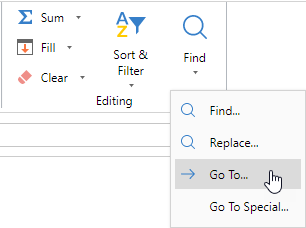
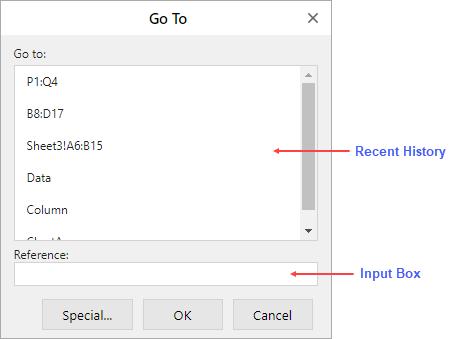
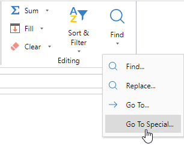
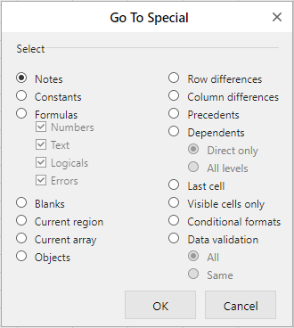

The "Go To" option in the Home > Editing > Find ribbon button provides a quick way to navigate a workbook through named ranges and cell references.

The "Go To" dialog provides an input box where you can enter named ranges or cell references to visit them. You can also select from the recent history section to visit previous queries.

You can navigate through the active worksheet using the "Go To Special" option. It helps to select special group of cells in the worksheet.

The “Go To Special” dialog provides 15 different positional methods that you can use to select cells.

| Positional Method | Description |
|---|---|
| Notes | Selects all the annotated cells in the target area. |
| Constants | Selects all the constant values entered directly in the cell. For example, numbers, text, logicals (TRUE or FALSE). If the value is calculated by formula, then it is not selected. |
| Formulas | Selects all the values generated by formulas, including numbers, text, logicals. If the value is entered directly in the cell, then it is not selected. |
| Blanks | Selects all the cells without value in the target area. If there is only one cell in the target area, then the target area is formed by the cell from (0,0) to the last data in the sheet. |
| Current region | Selects all the cells starting from the target area and expanding to the surrounding area until empty rows and columns are encountered. |
| Current array | Selects all the cell values generated by the array formula and the area of the array formula existing in the current target area. |
| Objects | Selects all the cells containing inserted objects in the target area including graphics, text boxes, pictures, WordArt, etc. |
| Row differences | Selects all the cells that are different from the active cell within the selected row. The comparison is made for each row independently and the cell used to compare in each row is in the same column as the active cell. |
| Column differences | Selects all the cells that are different from the active cell within the selected column. The comparison is made for each column independently and the cell used to compare in each column is in the same column as the active cell. |
| Precedents | Selects all the cells referenced by a formula in the selected active cell or target range. |
| Dependents | Selects all the cells where the formula referencing the active cell or target range is selected. |
| Last cell | Selects the cell with data or formatting in the lower right corner of the selected target range. |
| Visible cells only | Selects all the cells that can be seen in the selection (excluding hidden cells). |
| Conditional formats | Selects all the cells with conditional formatting applied. |
| Data validation | Selects all the cells with data validation applied. |